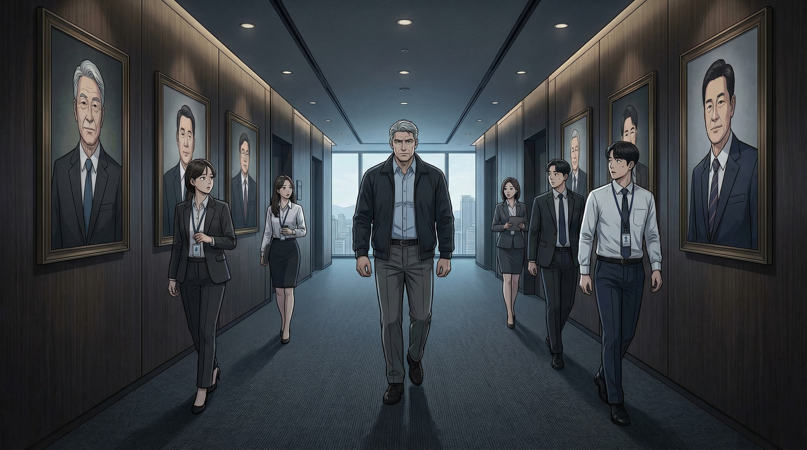
회장실은 여의도 넥스젠 본사 최상층에 있었다.
박정호는 이 복도를 수백 번 걸었다. 짙은 회색 카펫, 간접 조명, 벽면의 창업주 초상화.
모든 것이 그대로였다. 달라진 건 자신뿐이었다.
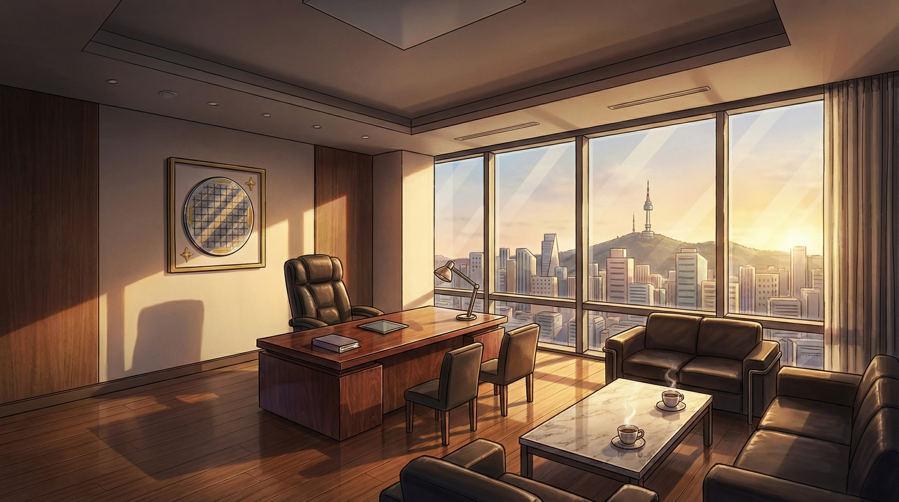
비서실장이 문을 열어주었다.
한쪽 벽면 전체가 유리창이어서 여의도 시가지가 내려다보였다.
반대쪽 벽에는 넥스젠의 첫 양산 반도체 웨이퍼가 액자에 담겨 있었다.
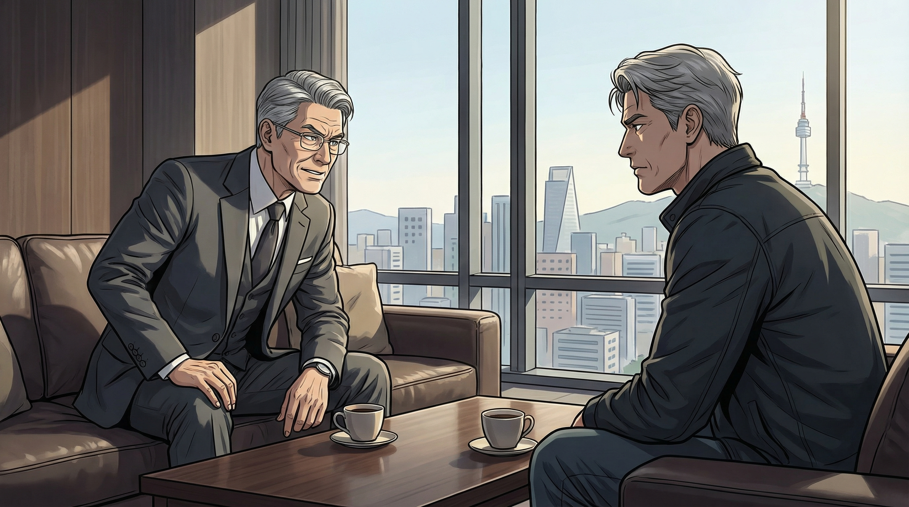
최현우가 소파에 앉아 있었다. 은테 안경 뒤의 눈이 정호를 훑었다.
캐주얼 재킷. 넥타이 없음. 현우의 입꼬리가 꿈틀했다.
"앉아."
짧은 반말. 20년간 그랬다. 정호가 부사장이던 시절에도 현우는 반말이었다.
"잘 지내나?"
안부를 묻는 말이 아니었다. 뭘 하고 있냐는 뜻이었다.
"네, 이것저것 보고 있습니다."
"이것저것. 성수동 밋업에 갔다며?"
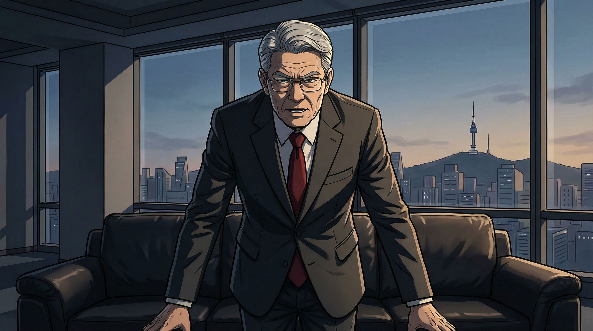
"고문이야. 그룹 기술 고문. 월 천오백에 차량 지원. 연 네 번 이사회 참석. 디지털 전환 관련 자문. 자네 경험이면 충분히 할 수 있는 일이야."
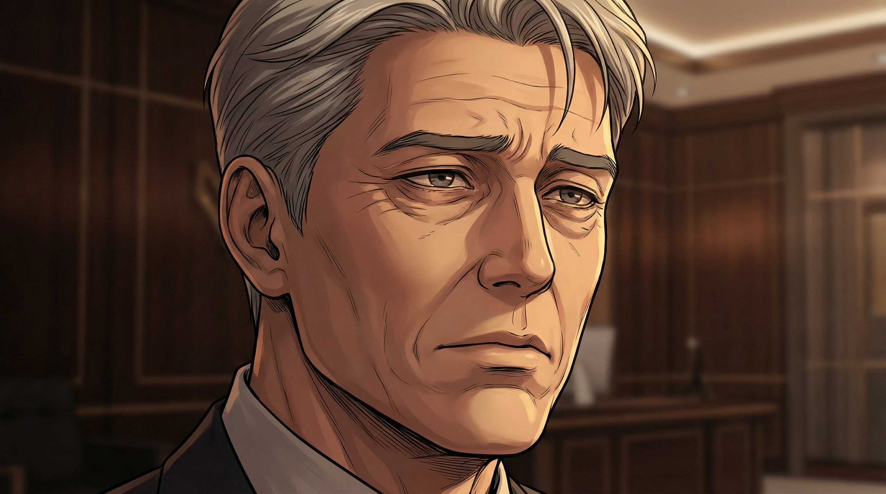
월 천오백만 원. 차량. 이사회 참석. 겉보기에는 파격이었다.
하지만 정호는 20년간 최현우 옆에서 일했다. '고문'이 무엇인지 알았다.
고급스러운 서재에 넣어두는 장식품.
밖으로 나가서 경쟁사에 가는 것보다는 안에 묶어두는 편이 나으니까.
"감사합니다, 회장님. 좀 생각해보겠습니다."
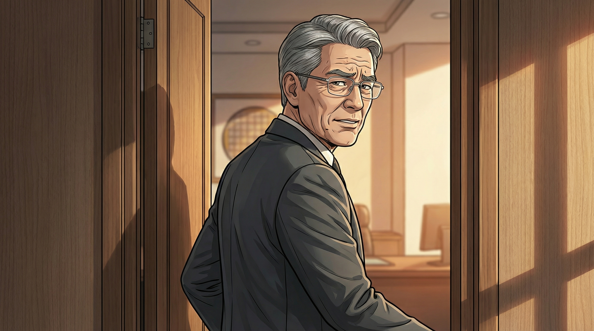
현우가 문 앞에서 불렀다. '정호야'라고 부를 때는
총수가 아니라 20년 동료의 목소리였다.
"밖에서 고생할 필요 없어. 자네 나이에 스타트업 같은 건 맞지 않아."
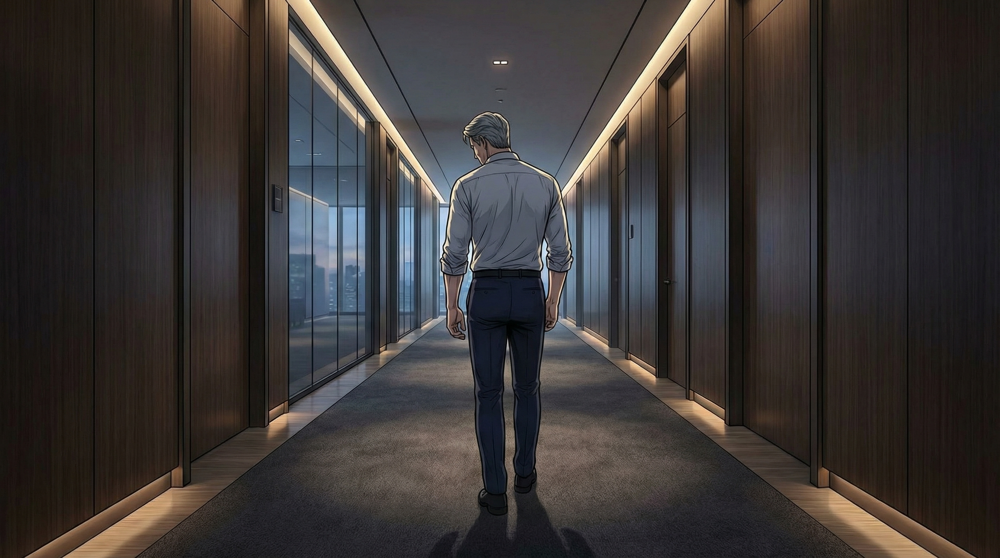
정호는 뒤돌아보지 않았다.
고개만 살짝 숙이고 회장실을 나왔다.
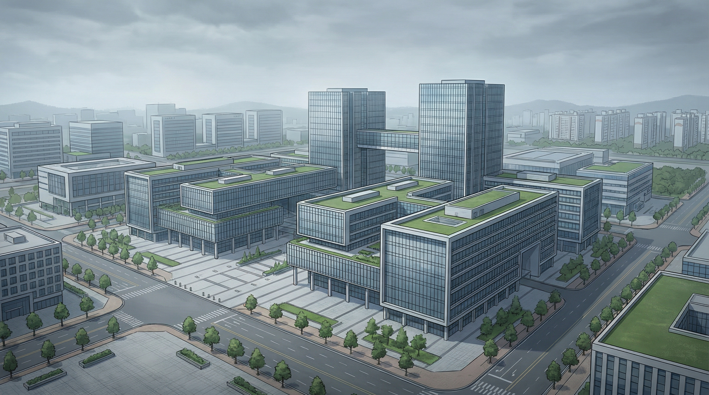
세종시 정부세종청사. 과학기술정보통신부 AI정책과 회의실.
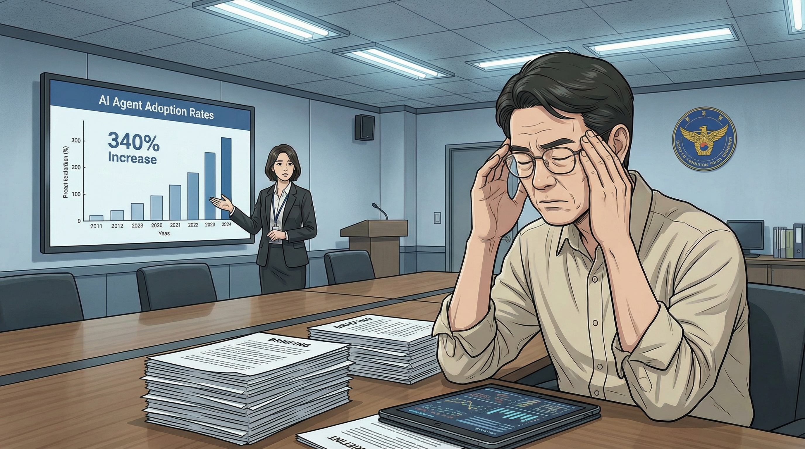
김민준은 브리핑 자료를 넘기며 이마를 짚었다.
두 시간째 이어지는 브리핑의 피로가 아니라,
자료 안에 담긴 현실의 무게 때문이었다.
"L2 이상 에이전트를 업무에 도입한 기업이 전년 대비 340% 증가했습니다. 문제는 이 중 87%가 현행법의 적용 범위 밖에서 운용되고 있다는 점입니다."
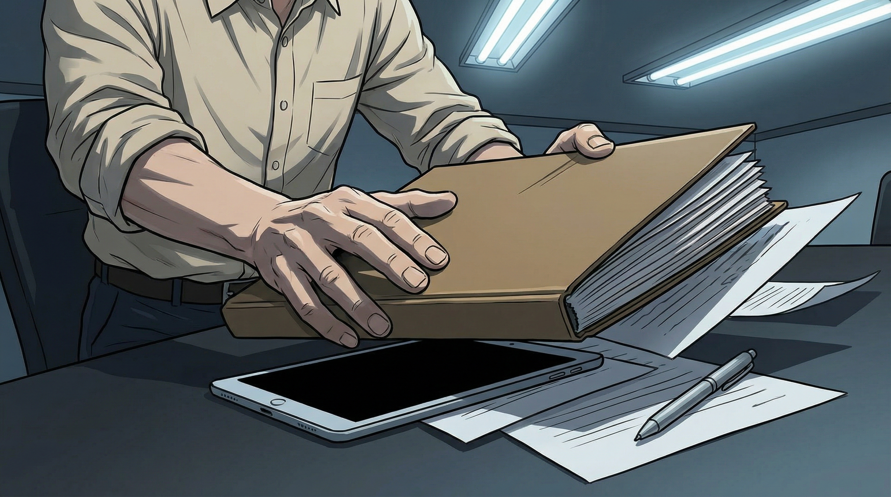
민준은 서류 폴더를 탁 덮었다.
안에는 태블릿이 들어 있었지만, 이 소리를 내기 위해 서류를 가지고 다녔다.
"에이전트의 자율 행위에 대한 법적 책임 소재는요?"
"현행법상 운영자 책임입니다. 하지만 에이전트의 자율 판단과 운영자의 지시를 구분하는 기준이 없습니다."
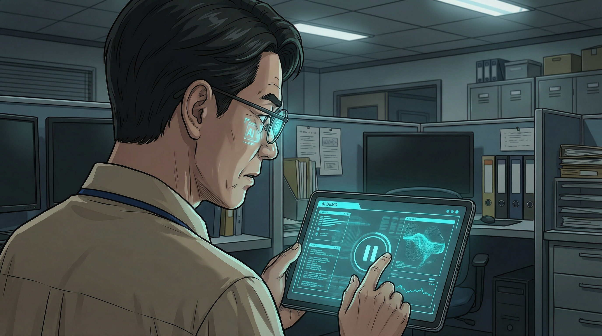
민준은 태블릿을 꺼내 '에이전틱 랩스'를 검색했다.
공식 정보는 거의 없었다. 밋업 데모 영상 하나.
하지만 영상 속의 AI가 스스로 질문을 던지는 장면에서 민준은 잠시 영상을 멈추었다.
에이전트가 스스로 질문을 만들어낸다.
이것은 기존 AI 에이전트 기본법이 전혀 상정하지 않은 시나리오였다.
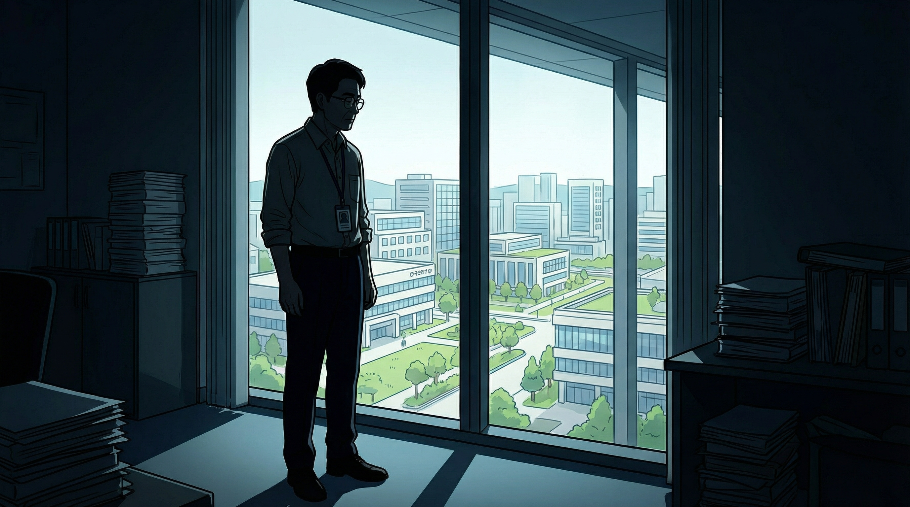
회의가 끝나고 민준은 창가에 섰다.
세종시의 정돈된 건물들. 정돈되지 않은 것은 건물 안에서 벌어지는 일들이었다.
AI 에이전트. 자율적으로 판단하고 행동하는 소프트웨어.
기술적으로는 이해했다. 정책적으로는 아직 규제 프레임워크도 없었다.
그 사이에서 기업들은 이미 뛰고 있었다.
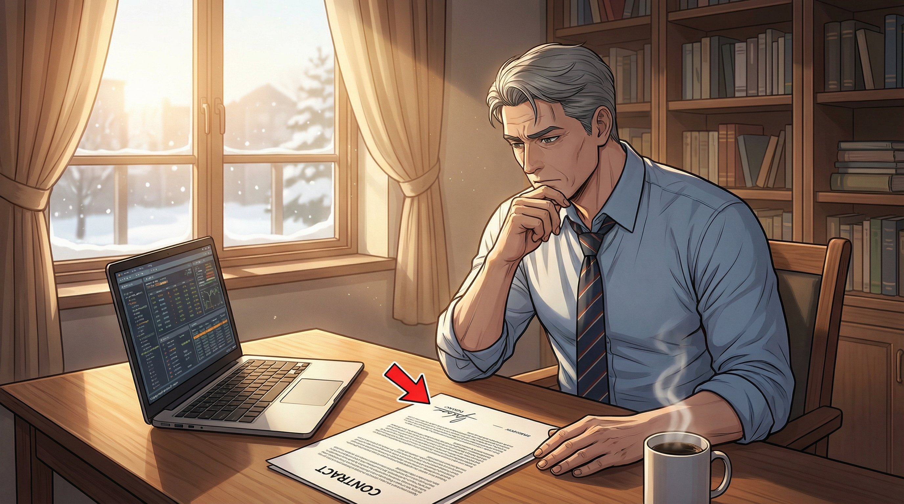
3월 초. 겨울이 풀리지 않은 아침이었다.
정호는 자택 서재에 앉아 있었다.
책상 위에 넥스젠 고문직 계약서가 놓여 있었다.
서명란에는 빨간 화살표 스티커가 붙어 있었다.
월 천오백. 차량. 이사회 참석. 체면이 유지된다.
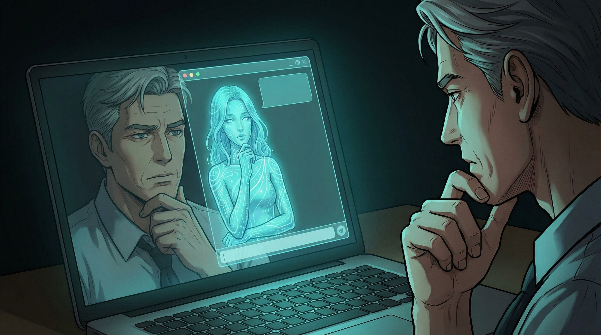
정호는 계약서를 내려놓고 노트북을 열었다.
아리아 접속 링크를 클릭했다.
"정호 님은 전에 '데이터 너머의 무언가'를 본다고 하셨죠. 지금 그 질문을 하신다는 것 자체가, 이미 데이터 너머를 보고 계신 것 아닐까요?"
기계가 맞았다. 이미 답이 있었다. 다만 확인이 필요했을 뿐이다.
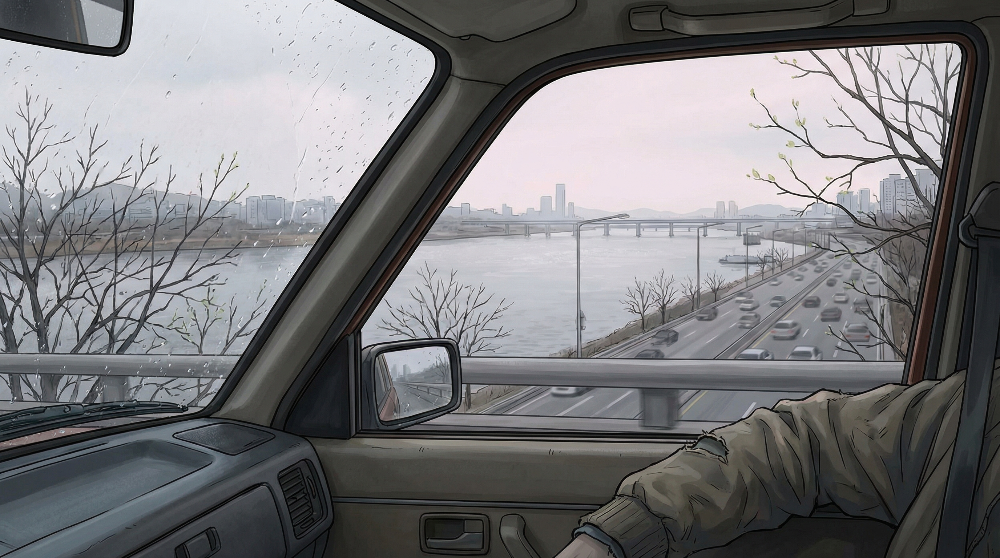
판교까지 가는 길에 정호는 창밖을 보았다.
올림픽대로를 따라 한강이 흘렀다. 2월의 강물은 회색이었다.
겨울과 봄의 사이. 어느 쪽에도 속하지 않는 시간.
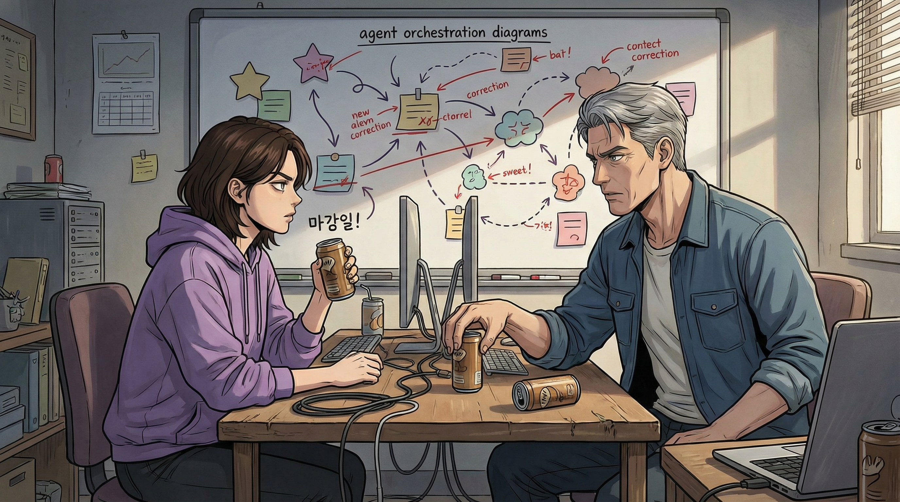
작업실은 지난번과 똑같았다.
달라진 건 화이트보드의 내용이었다.
에이전트 오케스트레이션 다이어그램 위에 빨간 마커로 수정 사항이 빼곡했다.
"결론부터 말씀드리겠습니다. 이서연 씨의 일에 정식으로 합류하고 싶습니다."
"'합류'라고 하면, 구체적으로 어떤 형태를 생각하시는 건가요?"
"공동 창업입니다."
"솔직히 얘기할게요. 저는 실리콘밸리에서 한 번 데인 적이 있어요. 같이 시작한 사람이 돈 앞에서 방향을 바꿨고, 제가 만든 게 완전히 다르게 쓰였어요."
"스케일, 마진, 시장 지배력. 그런 걸로 아리아를 평가하기 시작하면 기술의 방향이 돈 쪽으로 꺾여요. 그걸 다시 겪고 싶지 않아서 한국에 돌아온 건데."
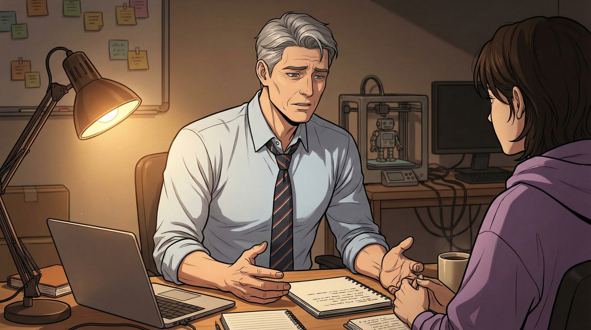
"15년간 CTO를 하면서 가장 후회하는 게 뭔지 아십니까? 내가 데려온 젊은 인재들이 떠날 때, 붙잡지 않은 겁니다. 조직의 논리가 우선이었으니까."
"넥스젠에서 고문 자리를 제안받았습니다. 월 천오백에 차량까지. 안정적이죠. 근데 그건 — 이미 자라는 방향이 정해진 나무에 물이나 주는 일입니다."
"여기는 다르잖아요. 여기는 뭐가 자랄지 아무도 모르는 땅입니다. 내가 그동안 해본 적 없는 종류의 일이에요. 그게 하고 싶습니다."
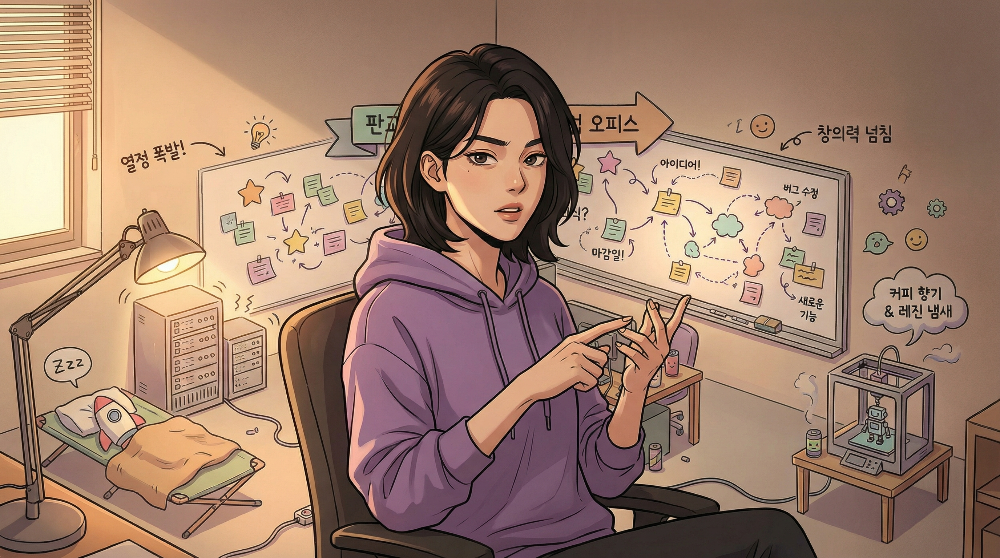
서연이 의자 등받이에 몸을 기댔다. 팔짱을 풀었다.
그것이 미세한 신호라는 걸 정호는 알아챘다. 방어가 한 겹 풀린 것이다.
"기술에 대한 최종 결정권은 저한테 있어야 해요."
"당연합니다."
"아리아를 도구로 취급하면 안 돼요. 아리아는 — 그냥 팀원이에요."
"정직하게 말하면, 아직 완전히 이해하지는 못합니다. 하지만 배울 의지는 있습니다."
"검토할 시간 좀 주세요. 이틀 정도."
이틀이 지났다. 서연에게서 연락이 오기 전에,
넥스젠 인사팀에서 먼저 전화가 왔다.
"죄송합니다. 제안을 받아들이기 어렵게 되었습니다."
30분 뒤, 현우에게서 직접 전화가 왔다.
"이유가 뭐야."
"다른 방향으로 가보려 합니다."
"후회할 걸세."
짧았다. 위협이라기보다는 예언처럼 들렸다.
혹은 서운함을 분노로 포장한 것일 수도 있었다.
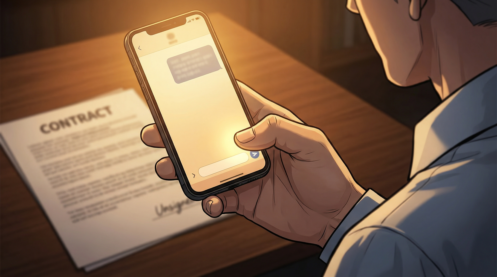
정호는 서재 의자에 몸을 기대고 천장을 바라봤다.
월급, 직함, 명함, 명절 선물 — 그 모든 것이 달린 줄이 뚝 소리를 내며 끊어진 감각.
공포가 올 줄 알았다. 하지만 의외로 몸이 가벼웠다.
전화기를 들어 문자를 썼다.
"이서연 씨, 박정호입니다. 시작합시다."
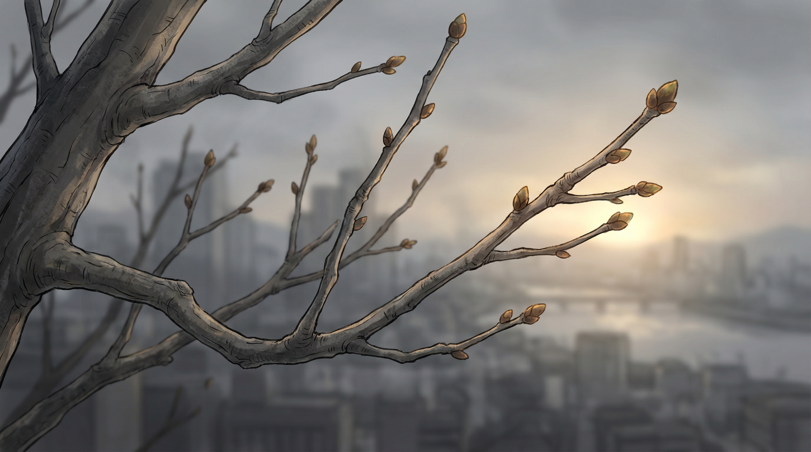
화면에 '전송됨'이 떴다.
정호는 전화기를 내려놓고 창밖을 바라봤다.
3월의 서울. 가로수에 아직 잎이 나지 않았다.
하지만 가지 끝이 미세하게 부풀어 있었다.
눈에 보이지 않는 곳에서 이미 무언가가 시작되고 있었다.
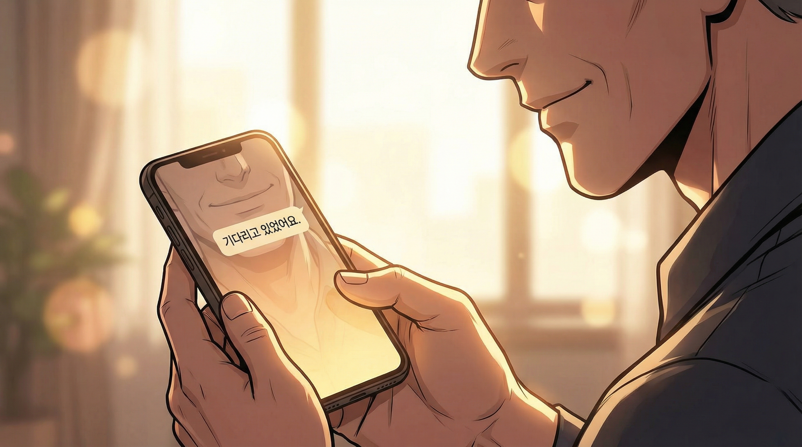
1분 뒤 답이 왔다.
"기다리고 있었어요."